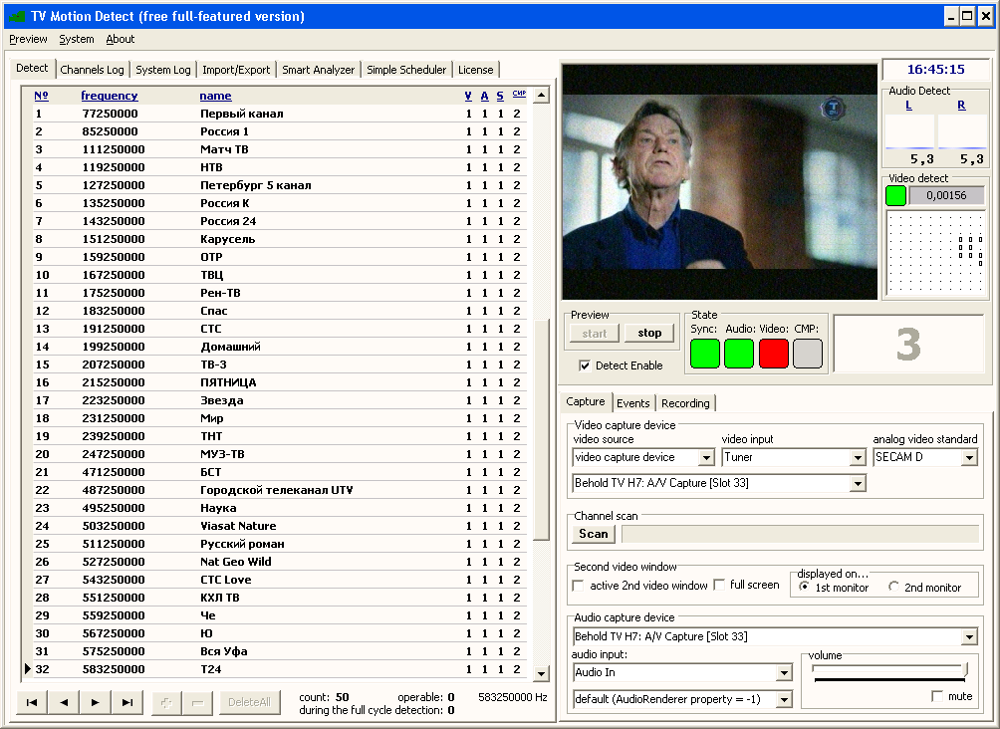
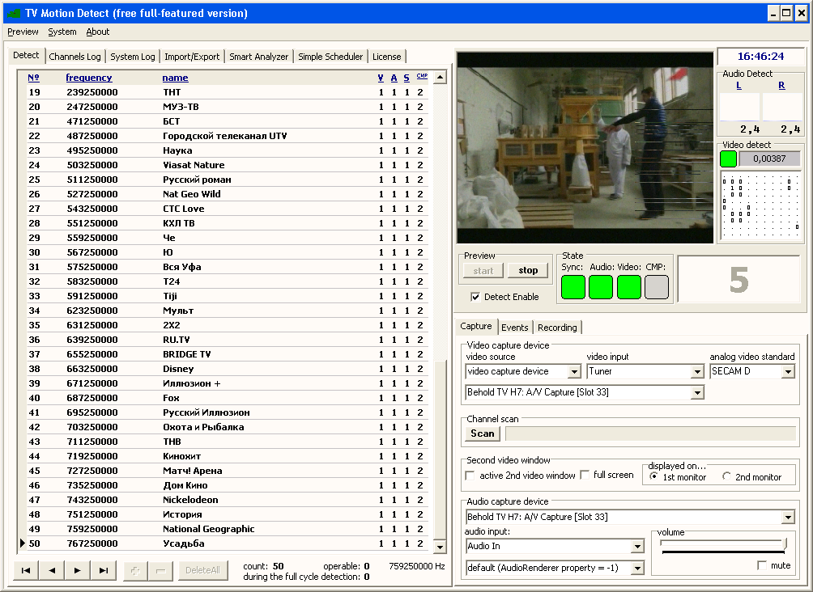
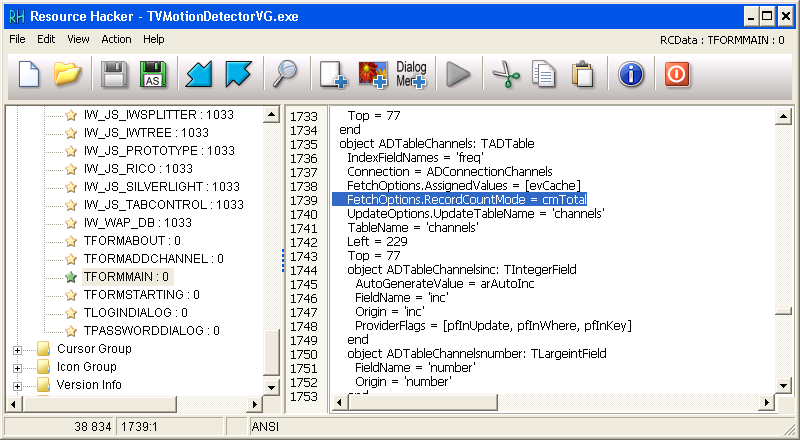
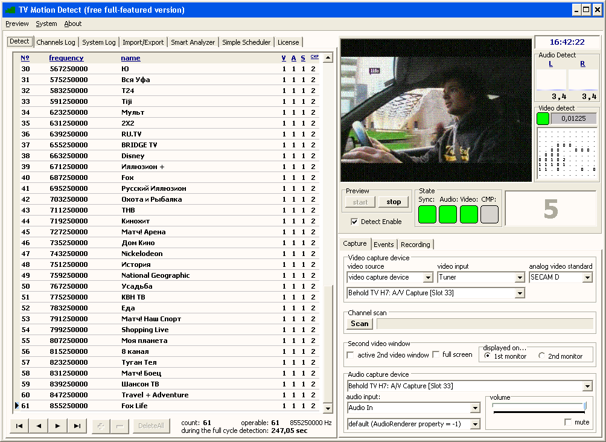

Эта заметка может показаться необычной, потому что не укладывается в формат моего блога. Блог посвящён в основном Debian и родственным системам, а сейчас я собираюсь рассказать о программе для Windows. Впрочем, прецеденты заметок про Windows в моём блоге имеются. Написать эту заметку я решил во-первых потому, что моё решение небольшой проблемы может пригодиться кому-то ещё, а во-вторых - потому что способ решения проблемы показался мне довольно интересным. По крайней мере до этого я подобным способом проблемы ещё никогда не решал.
Для начала несколько слов о самой программе. Программа предназначена для мониторинга аналоговых телеканалов и, насколько я могу судить, довольно популярна у операторов кабельного телевидения. Программа поочерёдно переключает каналы на ТВ-тюнере и проверяет, есть ли на канале звук, двигается ли изображение. Программа умеет вызывать другие программы в случае если проблема была только что обнаружена, обнаружена повторно или произошло восстановление вещания. Подробнее о TV Motion Detector VG можно почитать на официальном сайте. Ещё один немаловажный момент - программа бесплатная. Пусть это будет ещё одним аргументом в пользу того, что эта заметка написана не за деньги и не является скрытой рекламой :)
TV Motion Detector VG использует файл scanfreq.txt со списком частот каналов и файл channels.sqlite со списком каналов в таблице channels, журналом событий в таблице log и списком запланированных задач в таблице scheduler. Имеется база данных, в которой инженеры головной станции поддерживают актуальный список каналов с их номерами, частотами и названиями. Специальная самописная программа запрашивает список каналов из базы данных, наполняемой инженерами головной станции, формирует эти два файла и через Zabbix API создаёт нужные элементы данных и триггеры для каждого канала. В сформированном файле channels.sqlite в таблице scheduler создаются записи, которые предписывают каждый час вызывать bat-файл, который завершает TV Motion Detector VG, вызывает программу, обновляющую Zabbix и эти два файла, а потом запускает TV Motion Detector VG снова. В таблице channels из файла channels.sqlite для каждого канала указываются скрипты, которые надо вызывать в случае проблем на канале, в случае продолжающихся проблем и в случае восстановления канала. В качестве таких скриптов используется утилита zabbix_sender. Программа TV Motion Detector VG прописана в автозагрузку Windows. В Zabbix кроме состояния каналов контролируется ещё и момент, когда в последний раз приходили данные от TV Motion Detector VG. Таким образом получаем практически полностью автономно работающую систему из трёх звеньев - базы каналов, TV Motion Detector VG и Zabbix.
Ручное вмешательство бывает нужно, если компьютер с TV Motion Detector VG был перезагружен. В этом случае в Zabbix срабатывает триггер о том, что давно не поступали данные из TV Motion Detector VG. Дежурный инженер заходит на компьютер с Windows по RDP, TV Motion Detector VG автоматически запускается, а дежурный инженер отсоединяется от сеанса. Дальше всё продолжает работать.
Бывает, что требуется ручное вмешательство другого рода. Если в частотном плане появляются новые частоты или пропадают старые, то TV Motion Detector VG (или драйвер ТВ-тюнера) сходит с ума и реально настраивается не на те каналы, которые соответствуют частоте канала в таблице channels из файла channels.sqlite. В таком случае помогает простое лечение - нажать кнопку Scan, дождаться окончания сканирования, после чего можно обновить файлы channels.sqlite, scanfreq.txt и запустить TV Motion Detector VG снова.
Вмешательства такого рода требуются довольно редко. А вот следующий недостаток изрядно подрывает всю кропотливо выстроенную систему.
 Если приглядеться, то в нижней строчке под списком каналов программы можно увидеть текст "count: 50". Дело в том, что после перезапуска программа считает, что есть только 50 каналов. Только по ним она и проходится циклически, оставляя за пределами контроля ещё 11 каналов. Если вручную потянуть линейку прокрутки в списке каналов до конца, то программа отображает остальные каналы и после этого уже начинает проходиться циклически по каждому из 61 каналов. Но, напомню, программа в описанной выше схеме перезапускается каждый час. Поэтому ручное вмешательство не годится.
Первым делом я подумал, что программа при запуске выполняет SQL-запрос на получение списка каналов с ограничением LIMIT 50. Я открыл EXE-файл в шестнадцатеричном редакторе и нашёл все запросы SELECT. Был среди них такой запрос "SELECT COUNT(inc) as countinc, MAX(number) as maxnumber FROM channels;". Я проверил, что он возвращает и убедился, что обнаруживается ровно 61 канал.
Потом я подумал, что программа может где-то хранить количество каналов и принялся искать это место. Первым делом попробовал найти настройки программы в реестре. Нашёл, но среди них не было ничего похожего на искомое.
Снова попробовал поискать что-нибудь в шестнадцатеричном редакторе. Естественно, таких мест оказалось довольно много. Не знаю, что натолкнуло меня на мысль попробовать ArtMoney, потому что изначально было ясно, что даже если я и найду эти счётчики в оперативной памяти, то как потом мне найти и исправить их в файле EXE? Если они не хранятся в секции .BSS или подобной ей, то найти нужные константы в ассемблерном коде будет непросто. Да и даже если они хранятся в такой секции - у меня нет опыта правки EXE-файлов. Всё же решил для любопытства найти этот счётчик при помощи ArtMoney.
Попытка поиска увенчалась успехом - я нашёл аж две ячейки памяти, в которых хранились 32-битные числа, соответствовавшие количеству каналов в списке. Попытки исправить это число на 61 давали эффект ровно до того момента, когда программа заканчивала просмотр пятидесятого канала и пыталась приступить к следующему. Дальше программа ежесекундно выбрасывала окошки с сообщениями об ошибке до тех пор, пока я не возвращал в обе ячейки прежнее число 50.
Потом я сделал перерыв на обед. Пока шёл в столовую, подумал что свойства компонентов на форме могут оказаться прописаны в ресурсах Windows, вшитых в EXE-файл. Когда вернулся с обеда, решил проверить это предположение. В прошлом я доставал из EXE- и DLL-файлов встроенные в них пиктограммы, курсоры и картинки с помощью программы ResEdit. Скачал программу с официальной страницы. Из всех ресурсов наиболее многообещающим выглядел ресурс с именем TFORMMAIN. Но ResEdit отображал этот ресурс как блок двоичных данных.
Интересующий меня ресурс начинался с сигнатуры TPF0. Я поискал в интернете и понял, что это формы Delphi. В проекте Delphi у файлов этих форм бывает расширение DFM. Решил поискать, чем можно открыть такой файл на просмотр и редактирование. Вышел на программу ResourceHacker, которую можно скачать на странице разработчика - Ангуса Джонсона. Скачал программу и открыл интересующий меня ресурс на просмотр и редактирование. Стал изучать, какие компоненты присутствуют на форме и какие их свойства можно было бы поправить.
В процессе изучения, сопровождавшегося поиском в интернете, понял, что программа для доступа к SQLite использует компоненты AnyDAC Дмитрия Арефьева. К сожалению, документацию на AnyDAC найти в Интернете мне не удалось. Дело в том, что AnyDAC была продана фирме Embarcadero и превратилась в FireDAC. Удалось найти документацию только на библиотеку FireDAC. Оставалась слабая надежда на то, что библиотека изменилась не очень сильно и опции из FireDAC подойдут для AnyDAC.
В результате изучения документации, примеров кода, чтения форумов удалось составить примерное понимание того, как взаимодействуют между собой компоненты AnyDAC. Насколько я понял, AnyDAC на уровне интерфейсов компонентов совместима или очень похожа на наборы компонентов, аналогичных по функциям: BDE и ADO.
Верное направление для поисков было нащупано в ветке форума на www.sql.ru, где обсуждался FireDAC. Список всех возможных значений нашёлся в статье документации FireDAC.Stan.Option.TFDFetchOptions.RecordCountMode. На каком-то этапе я попробовал вставить в описание объекта ADTableChannels после 1738 строчки декомпилированного ресурса TFORMMAIN свойство FetchOptions.RecordCountMode = cmTotal:
Затем скомпилировал изменения нажав на зелёный треугольник и перезаписал файл EXE. Когда запустил программу, то увидел в строчке count вожделенное значение 61. Оставалось убедиться, что после 50 канала программа переключится на 51 канал и дойдёт до конца списка. Всё сработало, как надо:
В этот момент я испытал облегчение, радость и удивление от того, что поиски и эксперименты в конечном итоге привели к успеху. С одной стороны, я не надеялся на успех. Уж слишком были призрачными надежды на него. У читателей этого блога может сложиться впечатление, что все задачи, которые я перед собой ставлю, в конечном итоге завершаются успешно. Однако это не всегда бывает так. Иногда эксперименты заходят в тупик и очередная задача так и остаётся нерешённой. Раз нет решения, то и писать не о чем. С другой стороны, пока голова не перестала генерировать новые предположения и пока они все не проверены, остаётся надежда на успех. В этот раз мне повезло :)
P.S. Несколько замечаний о законности описанной выше модификации программы.
УК РФ, Статья 272. Неправомерный доступ к компьютерной информации.
(в ред. Федерального закона от 07.12.2011 N 420-ФЗ)
1. Неправомерный доступ к охраняемой законом компьютерной информации, если это деяние повлекло уничтожение, блокирование, модификацию либо копирование компьютерной информации, наказывается штрафом в размере до двухсот тысяч рублей или в размере заработной платы или иного дохода осужденного за период до восемнадцати месяцев, либо исправительными работами на срок до одного года, либо ограничением свободы на срок до двух лет, либо принудительными работами на срок до двух лет, либо лишением свободы на тот же срок.
Источник - сайт компании "КонсультантПлюс". УК РФ, Статья 272. Неправомерный доступ к компьютерной информации
Однако, в комментариях к УК РФ имеются следующие оговорки:
1. Модификация информации - внесение изменений в компьютерную информацию (в том числе изменение её параметров) без согласия её законного обладателя. Действующим законодатесльством разрешены следующие виды легальной модификации программ, баз данных лицами, правомерно владеющими этой информацией: а) модификация в виде исправления явных ошибок; б) модификация в виде внесения изменений в программы, базы данных для их функционирования на технических средствах пользователя; в) модификация в виде частной декомпиляции программы для достижения способности к взаимодействию с другими программами.
Источник - книга "Комментарий к Уголовному кодексу Российской Федерации (постатейный), Том 2" под редакцией Бриллиантова А.В. Глава 28. Преступления в сфере компьютерной информации. Статья 272. Неправомерный доступ к компьютерной информации
Ещё один источник - сайт адвокатского бюро "Домкины и партнёры". Методические рекомендации по осуществлению прокурорского надзора за исполнением законов при расследовании преступлений в сфере компьютерной информации
Таким образом, описанную выше модификацию программы я считаю легальной, т.к. легально получил бесплатную копию программы на сайте разработчика, а изменения внёс в программу с целью исправить явную ошибку.